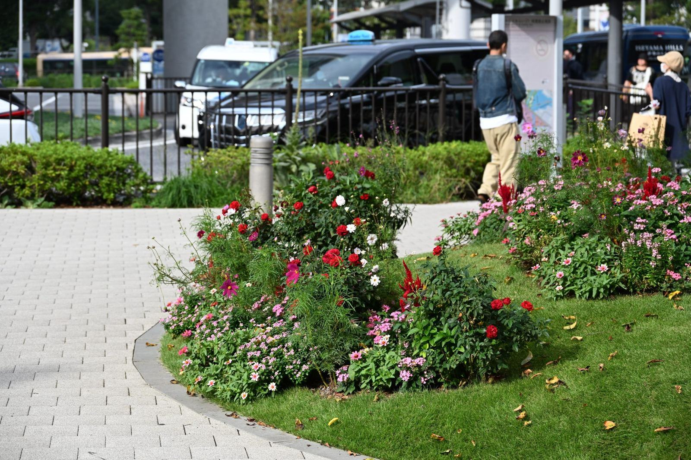
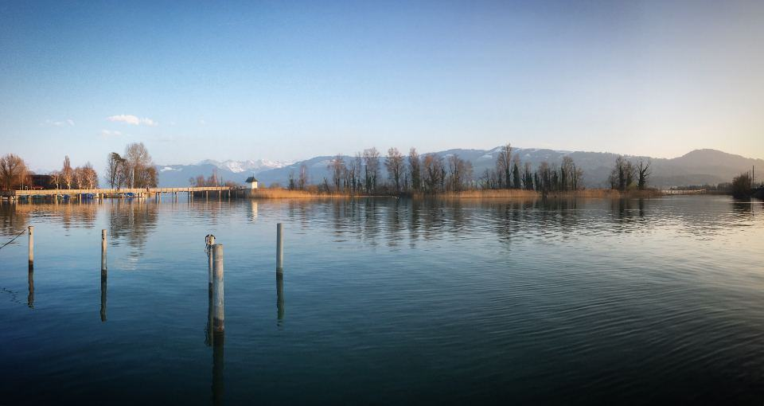
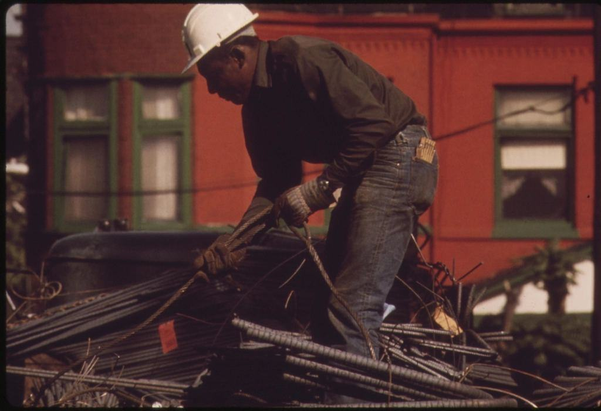

Om Grön Linje
Landskapsingenjören Leila Nasser och anläggaren Henrik Persson startade Grön Linje 2015 efter skyfallen i Malmö året innan. De ville bygga ytor som tar hand om regnet där det faller – och göra det utan att elda tusentals liter diesel.
Vi bygger dagvattenlösningar, gröna gårdar och gator med eldrivna maskiner och återbrukade massor – och vi redovisar klimatavtrycket för varje projekt.
Landskapsingenjören Leila Nasser och anläggaren Henrik Persson startade Grön Linje 2015 efter skyfallen i Malmö året innan. De ville bygga ytor som tar hand om regnet där det faller – och göra det utan att elda tusentals liter diesel.
I dag är vi 34 anställda. Vi har nio batteridrivna grävare och lastare, kör resten av maskinparken på HVO100 och har ett eget mellanlager i Gunnesbo där schaktmassor sorteras och återanvänds. Varje projekt får ett klimatbokslut när det lämnas över.

Mätbart lägre utsläpp sedan 2015
Landskapsingenjören Leila Nasser och anläggaren Henrik Persson startade Grön Linje 2015 efter skyfallen i Malmö året innan. De ville bygga ytor som tar hand om regnet där det faller – och göra det utan att elda tusentals liter diesel.
Tre platser inom fem mil
Vi arbetar nära för att hålla transporterna korta.
- LundHuvudkontor och laddstation på Gastelyckan.
- GunnesboMassterminal och maskinhall.
- MalmöArbetsplatskontor för gårdar och skolor.
Senaste nytt

Utsläppen per maskintimme minskade med 18 procent på ett år.

Parken ska kunna ta emot 4 000 kubikmeter regnvatten när den är klar 2027.

Leila Nasser förklarar uppbyggnaden lager för lager – från makadam till perenner.
Vad ska marken klara?
Beskriv platsen och vad ni vill uppnå, så återkommer vi med ett förslag och en första klimatkalkyl.
- Telefon
- 070-174 06 44
- E-post
- hej@gronlinje.se
- Öppettider
- Mån–fre 7–16
Kontakta oss
- Kontor
- Gastelyckan Västra 12
224 78 Lund - Telefon
- 070-174 06 44
- E-post
- hej@gronlinje.se
- Öppettider
- Mån–fre 7–16